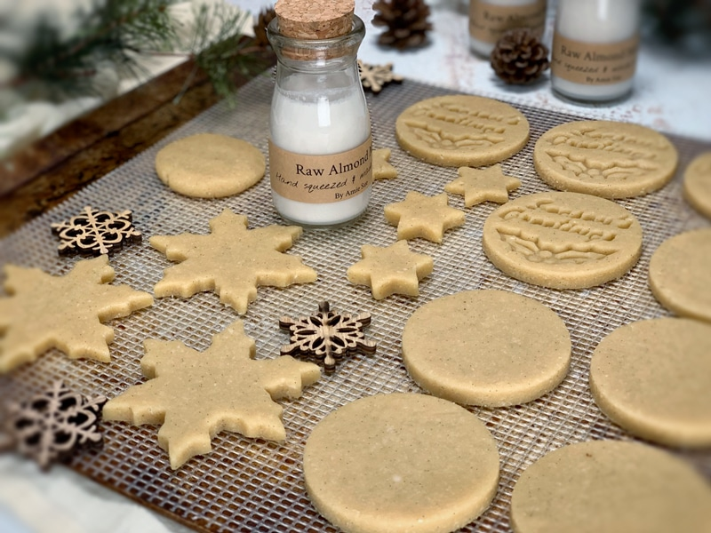
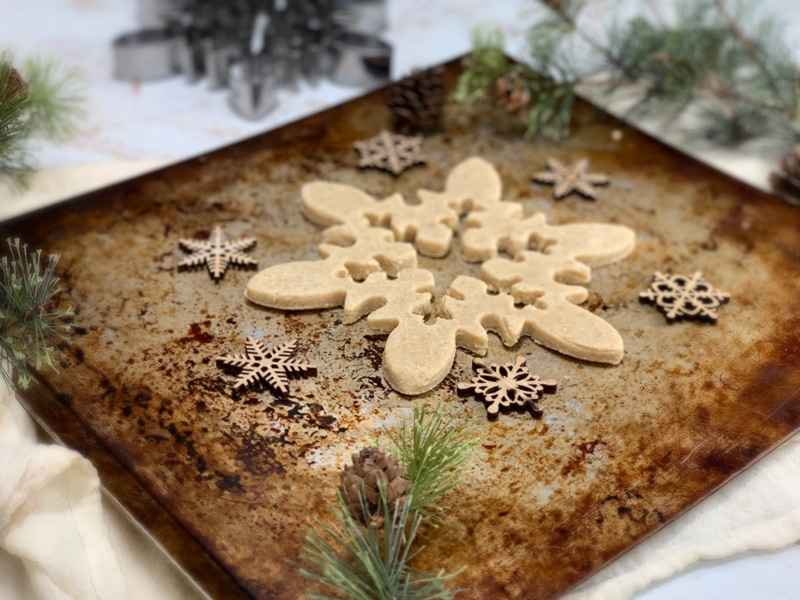
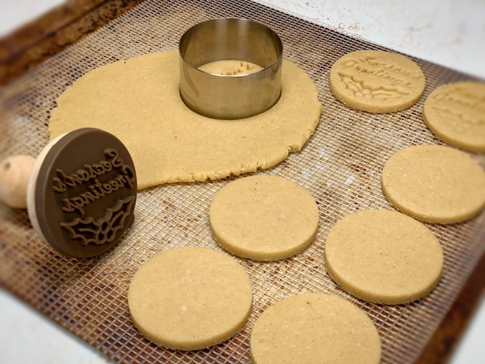
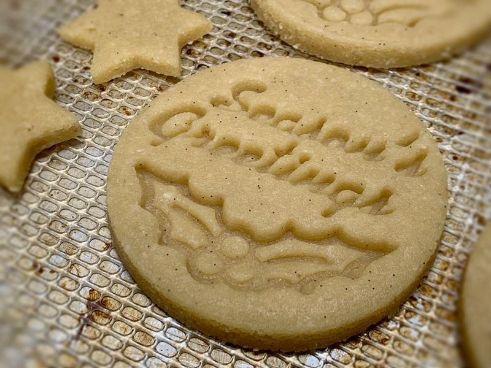
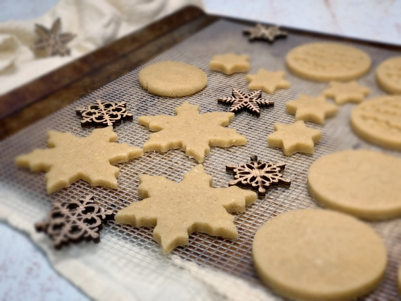
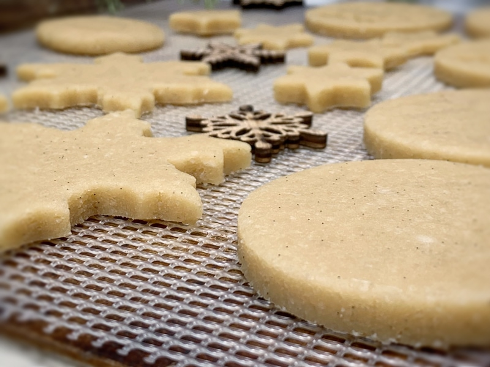

Sugar Cookies
Sugar Cookies
– raw, vegan, gluten-free, grain-free –
I find sugar cookies to be so completely comforting and very personal. For me, this is because people all over the world can use the same basic recipe and yet they all come out so very unique.

Kids and adults both enjoy designing, decorating and of course eating them. A basic sugar cookie recipe uses 1 cup of butter, 1/2 cup of granulated sugar, 2 tsp. of vanilla extract, 1 beaten egg and 2 1/2 cups of all-purpose flour. I was really missing a good ole’ sugar cookie recipe in my raw little raw world so I set out on a mission to create a healthier version and I accomplished just that. :)
Shaping Cookies
Shaping sugar cookie dough is perhaps the most fun part of this recipe. You can roll out the dough and cut it with cookie cutters. If you don’t have a collection of cutters, cut shapes out of cardboard and trace around them with a sharp knife. You can also make slice-and-dehydrate cookies with the dough. Shape it into logs, wrap in plastic and refrigerate. Once chilled, slice and dehydrate. These cookies can be colored, decorated with sprinkles, slathered with frosting, or even topped with jam.
Back in the day, while living in Alaska, my mom and I got into this bad habit of purchasing A sugar cookie from the local 7-11 gas station. I emphasize the word “A” because it was only ONE cookie… ONE BIG COOKIE! lol They were addicting. They were large in diameter, super thick, and so delicious!
These cookies were soft and each bite was like sinking your teeth into a chewy cloud (can’t you just imagine a chewy cloud? :) They were sweet but not too sweet to where you couldn’t finish it. If I recall, they must have been about 4-5 inches in diameter and about 1/2″ thick.
Not only that they were then topped with a delicate, mouth-watering pink icing which was then adorned with sprinkles. Not so bad for 7-11 huh? haha If memory serves me right, they had about 400 calories per cookie. Oy-vey. But long gone are those days and those cookies… till today! The cookies made from this recipe remind me of those chewy clouds and now I am a happy camper knowing I can enjoy them whenever I wish and they are made with healthy ingredients. Mission accomplished.

Side note… I had sent this photo to my girlfriend because she was here to help make some raw cookies. I wanted to show her the outcome. She commented on how she liked my pan (with a giggle). I had to laugh. I told her that I paid good money (umm, I think .25 cents) for it at a garage sale. I wanted the WELL USED look that it had for photo backdrops.
One day, I caught Bob with a scouring pad trying to clean it. I about fainted (ok maybe not really) but I was like… “NOOOOO! I BOUGHT IT THAT WAY!” It’s like they say, “One mans junk is another man’s treasure.” hehe
P.S. I have included a baking option for those of you who don’t own a dehydrator. You are still light years ahead of purchasing commercially processed cookies. So I am proud of you for being here. I do recommend in time that you invest in one as it will open up a whole new culinary world to you. :) I highly recommend the 9 tray Excalibur dehydrator.
Ingredients:
Yields 24+ cookies
- 1 cup fine almond flour
- 1 cup raw cashew flour
- 1/3 cup coconut flakes, powdered
- 1/4 tsp Himalayan pink salt
- 1/3 cup maple syrup
- 1/2 vanilla bean, seeds only
- 1/2 tsp almond flavoring
Decoration:
Preparation:
- In a food processor, fitted with the “S” blade, combine the almond flour, cashew flour, coconut flour, and salt… blitz together.
- Make sure the flours are as fine as possible.
- You can use all almond flour instead of the mix, which is what I did for the cookies in the photos.
- Add sweetener, vanilla bean seeds, and almond extract. Process until it starts sticking together and forms a ball.
- Wrap the dough in plastic wrap and place in the freezer for approx. 40 minutes or until chilled through.
- This step is very important. If you attempt to skip it you will find the dough too sticky to deal with.
- You could also place the dough in the fridge overnight if you wanted to do this in phases.
- Once chilled, line your surface with plastic wrap and place the chilled dough ball in the center.
- Cover with another piece of plastic, then start to roll the dough out to about 1/4″ thick.
- Remove the top plastic piece and using cookie cutters, cut out your shape(s) and transfer them to the mesh sheet that comes along with your dehydrator.
- Avoid cookie cutters that have fine details on them because the dough can be sticky and not come out of the cookie-cutter all that well.
- Dipping the cookie-cutter edges in melted coconut oil can help with removing the cookie dough from the cookie cutter.
- Dry at 145 degrees (F) for 1 hour, then reduce to 115 degrees (F) for roughly 10-16 hours or until desired dryness is reached.
- Store in an airtight container. If you place them in the fridge they will get sticky.
- Frost, decorate, and eat!
Baking option:
- Preheat the oven to 350 degrees (F).
- Line a baking sheet with parchment paper and place the cookies at least 1” apart. These cookies won’t flatten while they cook, you will need to help them by slightly flattening them with your fingers.
- Bake for about 15 minutes. Often times ovens run at different temperatures regardless of what the dial says so please check in on the cookies about every 5 minutes for the first batch. Document the time it takes for the next tray or batch.
- The baked version got nice and tannish/brown. They didn’t get snappy crispy which I like. They are chewier.
Culinary Explanations:
- Why do I start the dehydrator at 145 degrees (F)? Click (here) to learn the reason behind this.
- When working with fresh ingredients it is important to taste test as you build a recipe. Learn why (here).
- Don’t own a dehydrator? Learn how to use your oven (here). I do however truly believe that it is a worthwhile investment. Click (here) to learn what I use.

When it comes to sugar cookies all possibilities are on the table; cookie cutters, hand shape and flatten them, stamps, pressings, molds… you can be as creative as you wish! One tip when using cookie stamps is to place the stamp straight down on the dough and press firm and evenly before lifting it. If it doesn’t come out right the first time, gather the dough back up, roll it out, and try again.

I love seeing the vanilla bean seeds in the dough!

I usually roll the dough out to 1/4″ thick.

Serve them up with fresh almond milk!
For a gift giving an idea; package up the cookies and make a fresh bottle of almond milk. Yummm!
© AmieSue.com